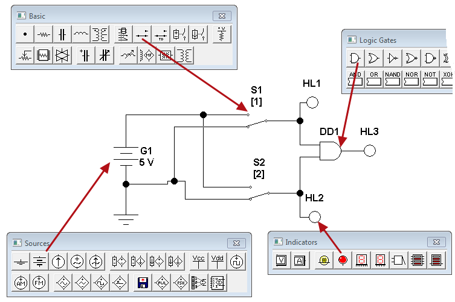
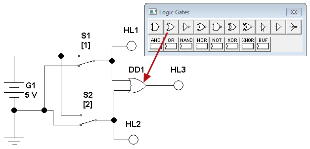
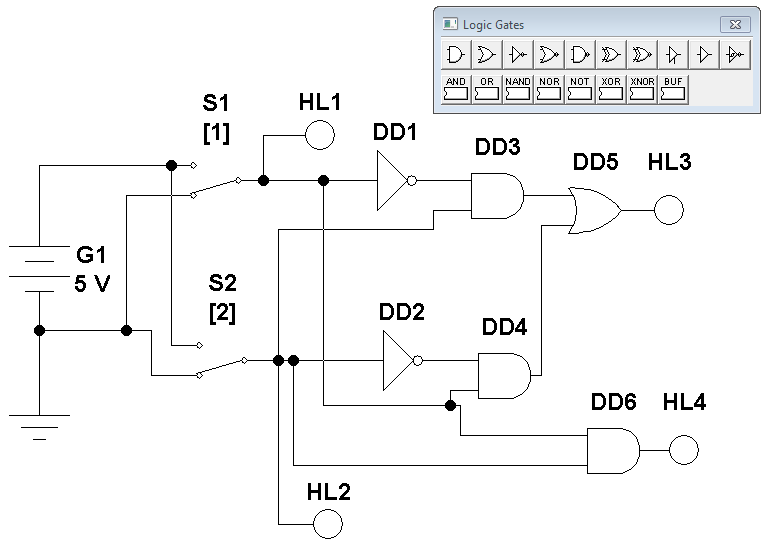

Electronics Workbench
Исследование логических элементов
в программе
Electronics Workbench
Подробнее о логических элементах можно узнать здесь.
1. Исследование работы логического элемента «И»
- В программе Electronics Workbench cоберите модель для исследования логического элемента «И» (рис. 1).

Рис. 1 - Модель для исследования логического элемента «И»
1. Верхнее по схеме положение переключателя соответствует «1» на входе логического элемента, нижнее положение - «0».
2. Положение переключателя изменяется при нажатии на клавиатуре клавиш «1» и «2»
3. Белый цвет индикатора соответствует «0», красный цвет - «1». - Установите свойства элементов схемы (табл. 1).
Для установки свойств:- сделайте двойной щелчок на элементе;
- откройте вкладку (Label, Value или Models);
- установите значения.
Таблица 1
Свойства элементов схемы Наименование Обозначение
элементаВкладка Label
(Свойство:Значение)Вкладка Value
(Свойство:Значение)Источник питания G1 Label: C1 Voltage (V): 5 V Индикатор HL1 Label: HL1 Индикатор HL2 Label: HL2 Индикатор HL3 Label: HL3 Логический элемент "И" DD1 Label: DD1 Переключатель S1 Label: S1 Key: 1 Переключатель S2 Label: S2 Key: 2 - Щелкните мышкой на кнопке
 в верхнем правом углу, чтобы включить схему.
в верхнем правом углу, чтобы включить схему. - Определите состояние индикаторов HL1-HL3, когда на оба входа поданы логические «0» и запишите результат в табл. 1 в рабочей тетради.
Таблица 2
Таблица истинности
логического элемента «И»X1 (HL1) X2 (HL2) Y (HL3) 0 0 1 0 0 1 1 1 - Нажмите на клавиатуре клавишу с цифрой «1», чтобы на вход X1 подать логическую «1».
- Состояния индикаторов HL1-HL3 запишите в табл. 1 в рабочей тетради.
- Нажмите на клавиатуре клавишу с цифрой «1», чтобы на вход X1 подать логический «0».
- Нажмите на клавиатуре клавишу с цифрой «2», чтобы на вход X2 подать логическую «1».
- Состояния индикаторов HL1-HL3 запишите в табл. 1 в рабочей тетради.
- Нажмите на клавиатуре клавишу с цифрой «1», чтобы на вход X1 подать логическую «1».
- Состояния индикаторов HL1-HL3 запишите в табл. 1 в рабочей тетради.
- Щелкните мышкой на кнопке в верхнем правом углу, чтобы выключить схему.
2. Исследование работы логического элемента «ИЛИ»
- Замените в предыдущей схеме логический элемент «И» на элемент «ИЛИ»( рис. 2).

Рис. 2 - Модель для исследования логического элемента «ИЛИ»
- Щелкните мышкой на кнопке в верхнем правом углу, чтобы включить схему.
- Определите состояние индикаторов HL1-HL3, когда на оба входа поданы логические «0» и запишите результат в табл. 2 в рабочей тетради.
Таблица 3
Таблица истинности
логического элемента «ИЛИ»X1 (HL1) X2 (HL2) Y (HL3) 0 0 1 0 0 1 1 1 - Нажмите на клавиатуре клавишу с цифрой «1», чтобы на вход X1 подать логическую «1».
- Состояния индикаторов HL1-HL3 запишите в табл. 1 в рабочей тетради.
- Нажмите на клавиатуре клавишу с цифрой «1», чтобы на вход X1 подать логический «0».
- Нажмите на клавиатуре клавишу с цифрой «2», чтобы на вход X2 подать логическую «1».
- Состояния индикаторов HL1-HL3 запишите в табл. 1 в рабочей тетради.
- Нажмите на клавиатуре клавишу с цифрой «1», чтобы на вход X1 подать логическую «1».
- Состояния индикаторов HL1-HL3 запишите в табл. 1 в рабочей тетради.
3. Исследование работы двоичного полусумматора
- В программе Electronics Workbench cоберите модель для исследования двоичного полусумматора (рис. 3).

Рис. 3 - Модель для исследования двоичного полусумматора
- Определите состояния индикаторов HL1-HL4 при различных комбинациях входных сигналов X1 и X2 и запишите результат в табл. 3 в рабочей тетради.
X1 и X2 - слагаемые;
S - значение суммы в данном разряде;
Р - перенос в старший разряд.Таблица 4
Таблица истинности
двоичного полусумматораX1 (HL1) X2 (HL2) S (HL3) P (HL4) 0 0 1 0 0 1 1 1 - Щелкните мышкой на кнопке в верхнем правом углу, чтобы выключить схему.